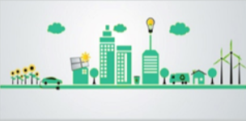
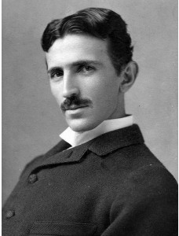
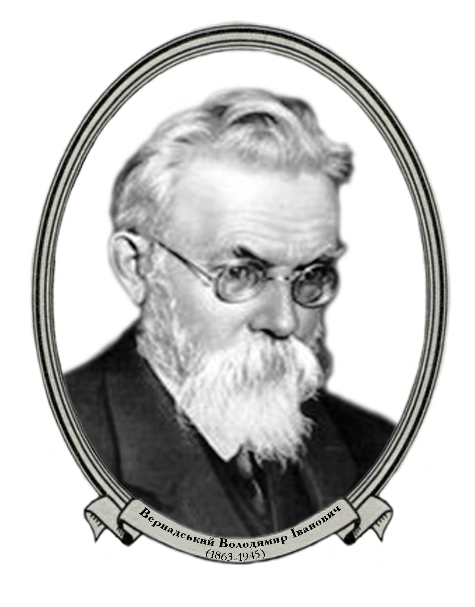
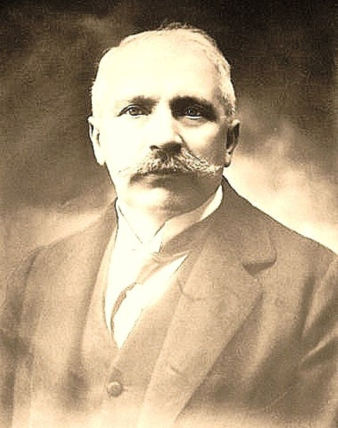

ЕКОЛОГІЯ ПЛАНЕТА ЗЕМЛЯ
- Яка логічна схема часу проявлення інтелекту і його якостей

>
Етика відносин "людина-природа" в традиційному суспільстві
>
Етика відносин "людина-природа" індустріальному суспільстві
>
Етика відносин "людина-природа" в інформаційному суспільстві
Мета дослідження
Досдити екологію планета земля як результат етичних відносин "людина-природа" і представити результати дослідження на сайті
Микола Тесла
 Ілон Маск
Ілон МаскВернадський В.
Луиджи Чамичан